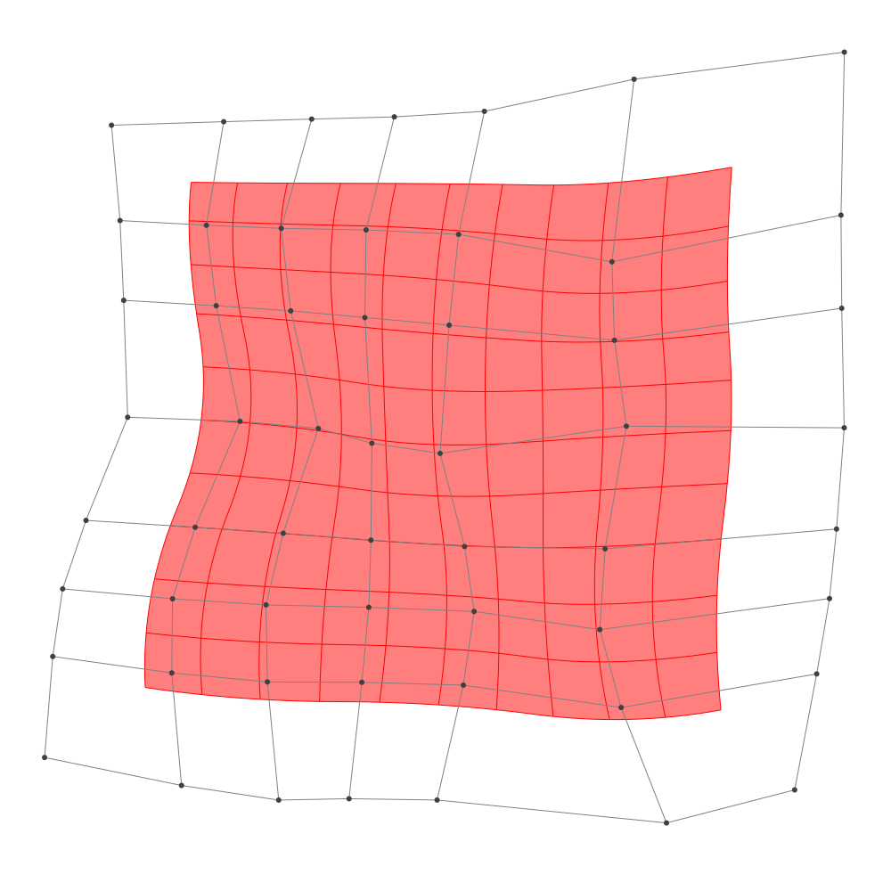
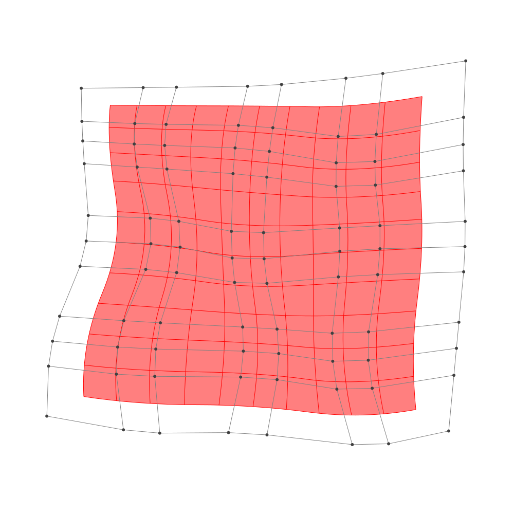

Refinement
BasicBSpline.refinement — FunctionRefinement of B-spline manifold with given B-spline spaces.
julia> p = 2 # degree of polynomial2julia> k = KnotVector(1:8) # knot vectorKnotVector([1, 2, 3, 4, 5, 6, 7, 8])julia> P = BSplineSpace{p}(k) # B-spline spaceBSplineSpace{2, Int64}(KnotVector([1, 2, 3, 4, 5, 6, 7, 8]))julia> rand_a = [SVector(rand(), rand()) for i in 1:dim(P), j in 1:dim(P)]5×5 Matrix{StaticArrays.SVector{2, Float64}}: [0.000493666, 0.998561] [0.152867, 0.887488] … [0.751396, 0.0948659] [0.364525, 0.51542] [0.00255268, 0.736863] [0.688821, 0.155299] [0.119535, 0.549475] [0.759842, 0.697214] [0.749927, 0.210303] [0.98023, 0.264101] [0.132136, 0.423079] [0.616557, 0.611003] [0.418798, 0.634831] [0.831268, 0.8045] [0.976459, 0.914784]julia> a = [SVector(2*i-6.5, 2*j-6.5) for i in 1:dim(P), j in 1:dim(P)] + rand_a # random5×5 Matrix{StaticArrays.SVector{2, Float64}}: [-4.49951, -3.50144] [-4.34713, -1.61251] … [-3.7486, 3.59487] [-2.13547, -3.98458] [-2.49745, -1.76314] [-1.81118, 3.6553] [-0.380465, -3.95053] [0.259842, -1.80279] [0.249927, 3.7103] [2.48023, -4.2359] [1.63214, -2.07692] [2.11656, 4.111] [3.9188, -3.86517] [4.33127, -1.6955] [4.47646, 4.41478]julia> M = BSplineManifold(a,(P,P)) # Define B-spline manifoldBSplineManifold{2, (2, 2), StaticArrays.SVector{2, Float64}, Tuple{BSplineSpace{2, Int64}, BSplineSpace{2, Int64}}}((BSplineSpace{2, Int64}(KnotVector([1, 2, 3, 4, 5, 6, 7, 8])), BSplineSpace{2, Int64}(KnotVector([1, 2, 3, 4, 5, 6, 7, 8]))), StaticArrays.SVector{2, Float64}[[-4.499506333855647, -3.5014390037538] [-4.347133318247858, -1.6125117378195823] … [-3.6359888814789665, 2.335714495063114] [-3.748603848623567, 3.5948659385823563]; [-2.1354746538240894, -3.9845803370512947] [-2.4974473234694594, -1.7631365535509795] … [-2.2228272494809116, 2.229486319593986] [-1.8111786478754266, 3.655298612147917]; … ; [2.4802304878917294, -4.2358992830614906] [1.6321363002248137, -2.0769210396242284] … [1.8238913985693763, 1.6997430667900324] [2.1165574640482303, 4.111002581516198]; [3.918798257395999, -3.8651687694266683] [4.331268435416102, -1.6954996841864811] … [4.43217555839636, 2.262719326332109] [4.476459369433257, 4.414783957482829]])
h-refinemnet
Insert additional knots to knot vector.
julia> k₊=(KnotVector(3.3,4.2),KnotVector(3.8,3.2,5.3)) # additional knotvectors(KnotVector([3.3, 4.2]), KnotVector([3.2, 3.8, 5.3]))julia> M_h = refinement(M,k₊=k₊) # refinement of B-spline manifoldBSplineManifold{2, (2, 2), StaticArrays.SVector{2, Float64}, Tuple{BSplineSpace{2, Float64}, BSplineSpace{2, Float64}}}((BSplineSpace{2, Float64}(KnotVector([1.0, 2.0, 3.0, 3.3, 4.0, 4.2, 5.0, 6.0, 7.0, 8.0])), BSplineSpace{2, Float64}(KnotVector([1.0, 2.0, 3.0, 3.2, 3.8, 4.0, 5.0, 5.3, 6.0, 7.0, 8.0]))), StaticArrays.SVector{2, Float64}[[-4.499506333855647, -3.5014390037538] [-4.408082524490974, -2.368082644193269] … [-3.6528811265506564, 2.524587211591] [-3.748603848623567, 3.5948659385823563]; [-2.9628857418351346, -3.815480870397171] [-3.0720567497191933, -2.5524430689858626] … [-2.6832103677987877, 2.471788330316949] [-2.489277468137276, 3.6341471763999706]; … ; [2.4802304878917294, -4.2358992830614906] [1.97137397529158, -2.940512336999133] … [1.8677913083912043, 2.061431993998957] [2.1165574640482303, 4.111002581516198]; [3.918798257395999, -3.8651687694266683] [4.166280364208061, -2.563367318282556] … [4.438818130051895, 2.585529021004717] [4.476459369433257, 4.414783957482829]])julia> save_png("2dim_h-refinement.png", M_h) # save image

Note that this shape and the last shape are identical.
p-refinemnet
Increase the polynomial degree of B-spline manifold.
julia> p₊=(1,2) # additional degrees(1, 2)julia> M_p = refinement(M,p₊=p₊) # refinement of B-spline manifoldBSplineManifold{2, (3, 4), StaticArrays.SVector{2, Float64}, Tuple{BSplineSpace{3, Int64}, BSplineSpace{4, Int64}}}((BSplineSpace{3, Int64}(KnotVector([1, 2, 3, 3, 4, 4, 5, 5, 6, 6, 7, 8])), BSplineSpace{4, Int64}(KnotVector([1, 2, 3, 3, 3, 4, 4, 4, 5, 5, 5, 6, 6, 6, 7, 8]))), StaticArrays.SVector{2, Float64}[[-4.088838870167324, -3.0958758879212414] [-4.05551450280119, -2.1237025451569567] … [-3.4067713692341868, 2.639741862074515] [-3.419390222077314, 3.283205987920361]; [-2.5985420310218115, -3.3625506905252216] [-2.736666225406731, -2.279538508572238] … [-2.3772863531104695, 2.596699886600878] [-2.215150683036901, 3.2957176287916194]; … ; [2.560491751129339, -3.63392085152125] [2.241491687769798, -2.5535408263190407] … [2.3214226809751723, 2.385587535246276] [2.447057192511103, 3.569617718978072]; [3.72963099174669, -3.3849853687975484] [3.8308190502828205, -2.301041729661031] … [4.018881745119502, 2.7177058943450865] [4.061722171841447, 3.8153377835517337]])julia> save_png("2dim_p-refinement.png", M_p) # save image

Note that this shape and the last shape are identical.